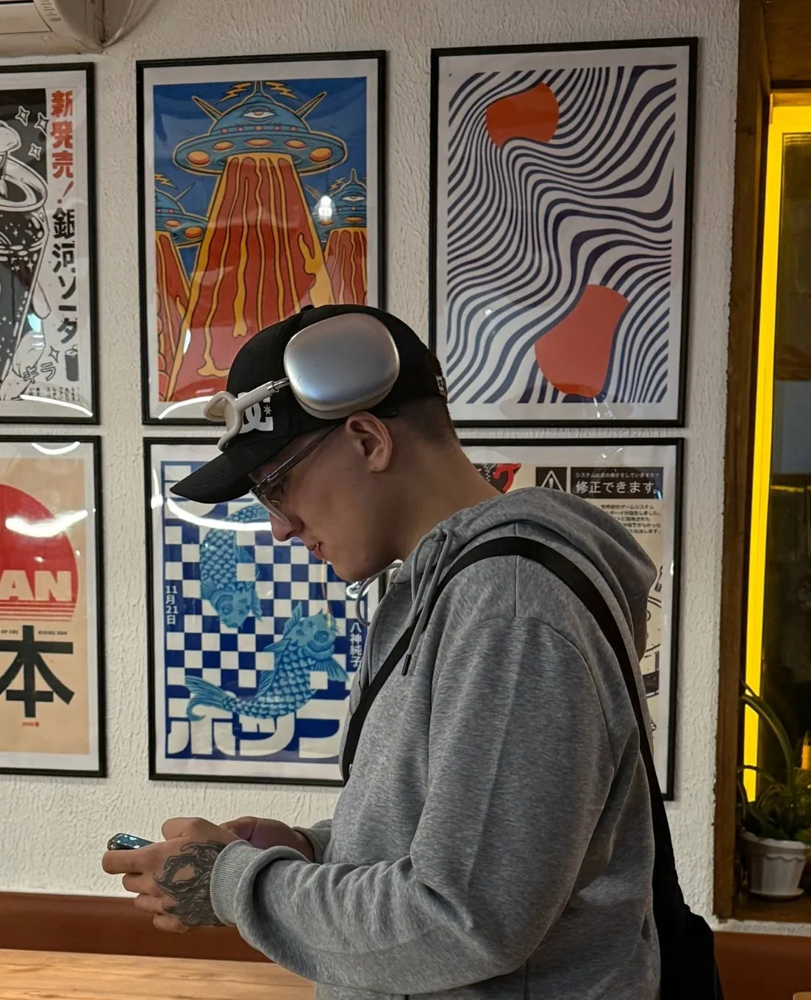
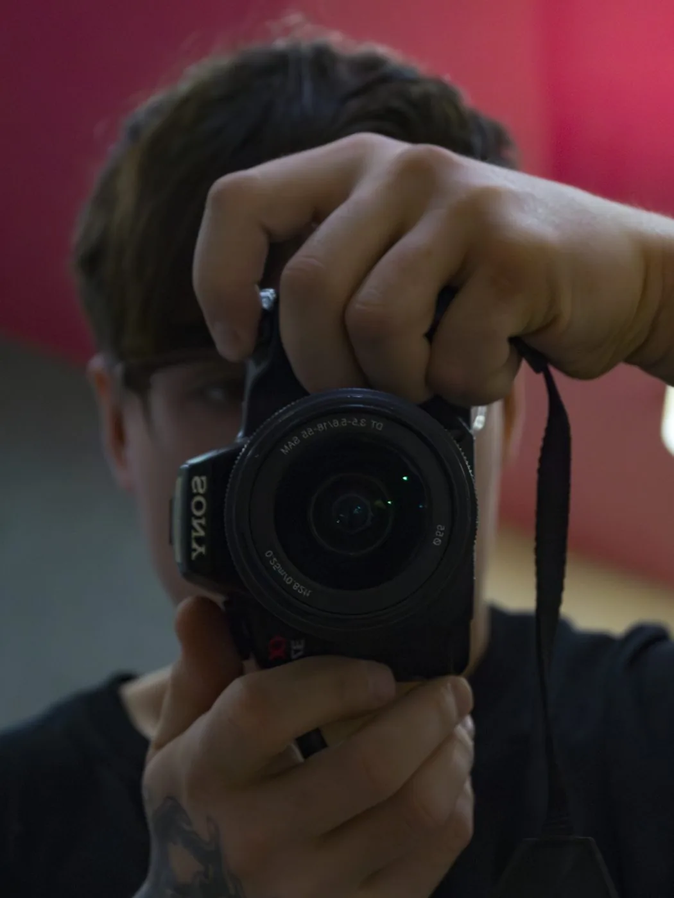
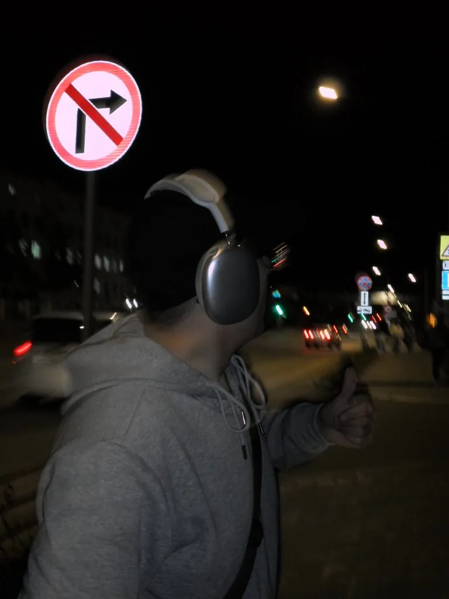

01
Портреты
Для себя, соцсетей, работы, пары или семьи. Помогаю с локацией, одеждой и тем, куда деть руки.
Снимаю людей, пространство и настроение
Портреты, события, рестораны и коммерческие истории — с естественным светом, вниманием к деталям и без ощущения «сейчас вас будут снимать».



Не декоративный шум. Каждый объект реагирует на движение, скролл и свет — так же, как хороший кадр реагирует на человека в нём.
Выбирайте раздел, открывайте кадр и собирайте свою подборку прямо на сайте.
Не продаю «пакет из 100 одинаковых фотографий». Мы сначала понимаем, зачем нужны кадры, а потом под это собираем съёмку.
Для себя, соцсетей, работы, пары или семьи. Помогаю с локацией, одеждой и тем, куда деть руки.
Репортаж без «встаньте сюда»: эмоции, люди и детали вашего дня.
Атмосфера места, блюда, команда и детали — для меню, соцсетей и рекламы.
Контент для продукта, команды и запуска. Снимаю так, чтобы изображения работали после публикации.
Стоимость уточняется после короткого брифа: дата, объём, локации, команда и количество контента.
На каждом этапе вы понимаете, что происходит и что будет дальше.
Запросить дату ↗Коротко обсуждаем цель, дату, место, референсы и желаемое настроение.
Подсказываю по позам и движению только там, где это действительно нужно.
Убираю лишнее, выстраиваю историю и аккуратно довожу цвет до финального результата.
Готовые фотографии — в удобном онлайн-доступе, чтобы их можно было сохранить и отправить дальше.
Выберите открытую дату — она автоматически подставится в заявку. Пустой календарь означает, что дату лучше уточнить напрямую.
Форма соберёт сообщение и подготовит его для Telegram. Можно приложить избранные кадры как референсы.
Соберите кадры, которые нравятся по свету и настроению. Подборка добавится в заявку.